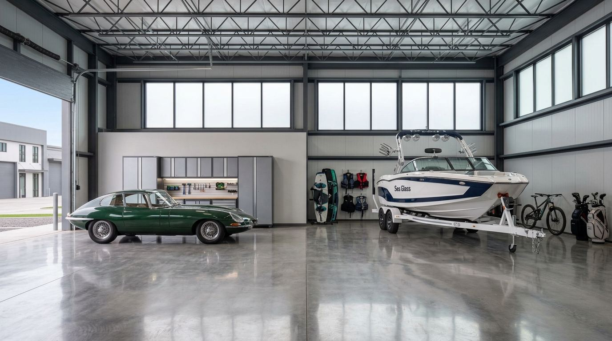

Garage Condos in Michigan: 2026 Market Guide

Michigan is one of the strongest garage condo markets in the country, and it is not hard to see why. This is the state that built the American auto industry, and it is also a state where almost everyone who can afford one owns a boat, a snowmobile, a camper, or a collector car that needs to live somewhere better than a gravel lot. The AutomotiveCondos.com directory currently tracks 33 garage condo communities across Michigan with more than 1,322 known units, ranging from $95,000 storage condos in Zeeland to trackside garages at M1 Concourse in Pontiac that resell for well into the six figures. This guide breaks down the entire Michigan market: where the communities are, what they cost, which ones are actively selling, and how to actually buy one.
If you want to jump straight to listings, the full Michigan directory has every community on one page, and the interactive map lets you browse them geographically. If you are brand new to the concept, start with what is a car condo and come back.
The Michigan Garage Condo Market at a Glance
Here is the state of the market as of November 2026, straight from the AutomotiveCondos.com directory:
- 33 communities tracked statewide, from Cassopolis in the southwest corner to Indian River near the top of the Lower Peninsula
- 1,322+ known units, with several communities still reporting unit counts
- 20 communities actively selling new or developer-held units right now
- 8 communities sold out and available only on the resale market
- 3 communities under construction, including the state's biggest motorsports project in a decade at Howell
- Entry pricing from roughly $95,000 for a basic storage condo to $599,990 and up for new trackside garage suites
Michigan's market splits into three distinct buyer pools. The first is the Metro Detroit motorsports buyer, anchored by M1 Concourse and the new Motorsports Gateway project in Howell. The second, and by far the largest by community count, is the West Michigan lakeshore buyer storing boats, RVs, and toys within a short drive of Lake Michigan. The third is the Up North buyer, with communities clustered around Traverse City, Petoskey, Charlevoix, and the inland lake towns that serve Michigan's cottage country.
That regional skew surprises a lot of first-time buyers. Metro Detroit gets the headlines because of M1 Concourse, but West Michigan is where the volume is. Grand Haven alone has three condo communities in the directory, and the Holland-Zeeland-Muskegon corridor adds nearly a dozen more. The lakeshore market is driven less by collector cars and more by boats and RVs that need heated, secure, owner-controlled storage eight months a year.
Southeast Michigan: The Motorsports Core
M1 Concourse, Pontiac
Any conversation about Michigan garage condos starts at M1 Concourse. Built on a former General Motors industrial site in Pontiac, M1 pairs roughly 250 private garage condos with its own 1.5-mile performance track, making it one of the largest private garage communities in the country and the model that newer motorsports developments across the Midwest are chasing. The community is fully established, so there are no developer units left; everything trades on the resale market, where the AutomotiveCondos.com directory shows resales starting from about $399,000. Larger customized units with mezzanines, lounges, and track frontage trade well above that.
M1 is the clearest example in Michigan of what separates a true car condo community from plain storage: track access, a social calendar, on-site events, and an owner base that treats the garage as a second living room. You are buying into a club as much as a building. That is also why M1 resale pricing holds up the way it does. Supply is fixed, the track is not getting any shorter, and Metro Detroit has one of the densest concentrations of serious car collectors in America.
Motorsports Gateway Howell
The biggest new build in the state is Motorsports Gateway Howell, currently under construction with 68 units priced from $599,990. Positioned in Livingston County between Detroit and Lansing, it is aimed squarely at the buyer who missed the original M1 sales window and wants new construction with motorsports amenities. At $599,990 to start, it is the most expensive new-construction entry point in Michigan, which tells you where the top of this market is heading.
The rest of Southeast Michigan
Beyond the two marquee motorsports projects, Southeast Michigan has a practical tier of communities: Storage Condos of Michigan in Waterford (63 units, resale only), St. Clair Storage Condos in Casco Township (90 units, actively selling, one of the largest communities in the state), HollyWood Garage Condos in Grand Blanc (28 units, selling), and Lakeview Storage Condominiums in Onsted serving the Irish Hills lake region (38 units, selling). These are workhorse communities: heated or heatable units, wide drives, and pricing far below the motorsports tier.
West Michigan: The Lakeshore Storage Capital
With 19 of the state's 33 communities, the West Michigan lakeshore is the deepest garage condo market in Michigan, and one of the deepest in the entire Midwest. The corridor runs from Holland and Zeeland in the south through Grand Haven, Muskegon, and Norton Shores, then up through Hart, Mears, and Ludington.
Grand Haven is the standout city. The directory tracks three communities there: Grand Haven Storage (81 units, resale only, with 2026 resales running $285,000 to $1.1 million and a median of $585,000), Verhoeks Street Storage Condos (24 units, resale only, around $275,000), and the new Kooiman Place project (12 units under construction). Add Channel Side Storage Condos just across the river in Ferrysburg (49 units across three phases, 2026 resales from about $98,000 to $295,000) and you have a genuine submarket with its own pricing ladder. A $585,000 median resale in Grand Haven is not a typo. Large boat-capable condos near a deep-water channel to Lake Michigan command real money, and the sold-out communities there have become appreciating assets.
South of Grand Haven, the Holland-Zeeland area offers the state's most affordable entry points. Zeeland South Storage Condominium lists units around $95,000, the Riley Condominium in Zeeland recorded 2026 sales between $160,000 and $192,000, and Port Sheldon Storage Condos in Jenison posted 2026 sales from $188,000 to $353,000. Holland itself has two communities (Holland Storage Condos and James Street Storage Condominium), and the West Olive area between Holland and Grand Haven adds two sold-out resale communities.
North along the shore, Muskegon has two actively selling communities (Sherman Flex Suites and Suite Space), 3rd Stall Storage in Norton Shores is a 47-unit sold-out community, and The Dune Lockers in Mears puts 68 units at the doorstep of the Silver Lake Sand Dunes, one of the busiest ORV destinations in the Midwest. Keep going north and ClearSpace in Ludington lists units around $325,000. The common thread on the lakeshore: this is boat, RV, and powersports country, and the communities are built for 14-foot doors and 45-foot coaches, not just show cars.
Northern Michigan: Cottage Country Storage
The third cluster follows Michigan's vacation economy. Traverse City has two large communities, Silver Lake Storage Barns (50 units) and M37 Round About Barns (43 units), both actively selling. Hearthside Grove Luxury Garages in Petoskey brings 60 units to one of the wealthiest resort corridors in the state, and Toy Box Luxury Storage Units in Charlevoix serves the same Lake Michigan gold coast. Inland, Indian River Storage Condos (53 units, around $120,000) sits at the crossroads of the Inland Waterway and the I-75 snowmobile corridor, and the 48-unit Higgins Lake-Houghton Lake Storage Condominiums project in Roscommon is under construction in the middle of Michigan's largest inland-lake recreation zone. Crystal Lake Storage Barns in Benzonia rounds out the group near Frankfort and the Betsie River.
The Up North communities tend to be more affordable per square foot than the lakeshore or Metro Detroit, and they solve a very specific problem: the cottage owner who is tired of trailering the boat and sleds three hours each way every season. Buy the condo near the cottage, store everything there, and tow nothing.
The Largest Garage Condo Communities in Michigan
Notable Michigan Communities: Status and Pricing
The table below pulls ten of the most notable communities from the full Michigan directory, with their current status and the best available pricing data:
| Community | City | Status | Units | Pricing |
|---|---|---|---|---|
| M1 Concourse | Pontiac | Established | 250 | Resales from ~$399K |
| Motorsports Gateway Howell | Howell | Under construction | 68 | From $599,990 |
| Grand Haven Storage | Grand Haven | Resale only | 81 | 2026 resales $285K–$1.1M (median $585K) |
| St. Clair Storage Condos | Casco Township | Selling | 90 | Inquire |
| The Dune Lockers | Mears (Silver Lake Dunes) | Selling | 68 | Inquire |
| Hearthside Grove Luxury Garages | Petoskey | Selling | 60 | Inquire |
| Channel Side Storage Condos (I–III) | Ferrysburg | Resale only | 49 | 2026 resales ~$98K–$295K |
| Indian River Storage Condos | Indian River | Selling | 53 | ~$120K |
| Riley Condominium | Zeeland | Selling | 40 | 2026 sales $160K–$192K |
| ClearSpace | Ludington | Selling | 24 | ~$325K |
What Garage Condos Cost in Michigan
Michigan's pricing ladder is one of the widest of any state in the directory, which makes it a good market for first-time buyers and serious collectors alike. Based on 2026 sales and listing data across the state, the market breaks into four tiers:
- Entry tier ($95,000 to $160,000): Basic storage condos, usually 1,000 to 1,400 square feet, often cold or minimally heated. Zeeland South (~$95K), Channel Side's smaller units (from ~$98K), and Indian River (~$120K) live here.
- Mid tier ($160,000 to $350,000): The heart of the market. Heated units with bathrooms or rough-ins, 14-foot doors, room for a boat or coach plus vehicles. Riley Condominium ($160K–$192K), Port Sheldon Jenison ($188K–$353K), Verhoeks (~$275K), ClearSpace (~$325K).
- Premium tier ($350,000 to $600,000): Large or finished units in supply-constrained submarkets. M1 Concourse resales start around $399K, and the Grand Haven median sits at $585K.
- Trophy tier ($600,000 and up): New trackside construction at Motorsports Gateway Howell (from $599,990) and the top of the Grand Haven resale market, which reached $1.1 million in 2026.
For a full breakdown of what drives these numbers, including HOA dues, taxes, insurance, and build-out costs, see our cost guide.
New Construction vs. Resale: Where the Opportunities Are
Twenty of 33 Michigan communities are actively selling, which is a healthier new-supply picture than most states. If you want new construction, the pipeline includes Motorsports Gateway Howell, the Kooiman Place project in Grand Haven, and the Higgins Lake-Houghton Lake project in Roscommon, plus a planned community in Allendale. If you want a sold-out community, you are shopping resale in Grand Haven, Ferrysburg, Norton Shores, Waterford, West Olive, or Montague, and you should expect to compete. Sold-out lakeshore communities have shown the strongest price appreciation in the state, with Grand Haven Storage's 2026 trades ranging from $285,000 all the way to $1.1 million.
One practical note on resales: inventory is thin and much of it trades off-market through community word of mouth. If you own a Michigan unit and are thinking about selling, you can list your unit on AutomotiveCondos.com and get it in front of buyers searching these exact communities.
How to Buy a Garage Condo in Michigan
Buying a garage condo in Michigan works like buying any condominium: you get a deed to your unit, you pay property taxes on it, and you join an association that maintains the common elements. A few Michigan-specific points worth knowing before you write an offer:
- Heating matters more here than almost anywhere. Michigan winters will destroy an unheated collection and make an unheated unit miserable to use from November through March. Confirm whether the unit is heated, insulated only, or cold storage, and what the gas or electric service can support if you plan to add heat.
- Check the association's rules on use. Some Michigan storage condo associations are storage-only and prohibit workshops, lounges, or regular occupancy. Motorsports-oriented communities like M1 expect you to use the space. Read the master deed and bylaws before you fall in love.
- Financing is doable but specialized. Most buyers pay cash or use a commercial/portfolio loan rather than a residential mortgage. Local Michigan banks and credit unions in the lakeshore counties see these deals regularly.
- Taxes are modest relative to a second home. Garage condos are typically assessed as commercial or storage property, and carrying costs run far below a comparable lake cottage.
- Door height and depth are the spec that sells. On the lakeshore, 14-foot doors and 50-foot depths carry a durable premium because they fit wake boats on trailers and Class A coaches.
Our buying guide walks through the full process, from reviewing association documents to closing, and applies directly to Michigan purchases.
Why the Michigan Market Keeps Growing
Three forces are pushing Michigan garage condo demand, and none of them look temporary. First, the toy count keeps rising: Michigan is perennially among the national leaders in registered boats and snowmobiles, and every one of those machines needs winter storage. Second, residential storage is shrinking as new subdivisions cap garage sizes and HOAs prohibit outdoor boat and RV parking, which pushes owners toward deeded storage they control. Third, the collector car economy that was always strong in Metro Detroit has gone mainstream, and M1 Concourse proved that a garage community with a social layer can anchor hundreds of units and hold value for a decade. The under-construction pipeline in Howell, Grand Haven, and Roscommon says developers agree.
Browse all 33 communities on the full Michigan directory, or see how Michigan stacks up against neighboring states on the interactive map.
Frequently Asked Questions
How much does a garage condo cost in Michigan?
Based on AutomotiveCondos.com directory data, Michigan garage condos range from about $95,000 for entry-level storage condos in Zeeland to $599,990 and up for new trackside units at Motorsports Gateway Howell. Most 2026 sales fell between $160,000 and $353,000, while premium markets run higher: M1 Concourse resales start around $399,000 and Grand Haven resales posted a $585,000 median in 2026, topping out at $1.1 million.
How many garage condo communities are there in Michigan?
The AutomotiveCondos.com directory tracks 33 garage condo communities in Michigan with more than 1,322 known units. Twenty communities are actively selling, eight are sold out and resale only, three are under construction, one is planned, and M1 Concourse in Pontiac is fully established with roughly 250 units trading on the resale market.
What is the biggest car condo community in Michigan?
M1 Concourse in Pontiac is Michigan's largest, with roughly 250 private garage condos built around a 1.5-mile private performance track on a former General Motors site. The largest actively selling community is St. Clair Storage Condos in Casco Township with 90 units, followed by Grand Haven Storage with 81 units on the resale market.
Can I store a boat or RV in a Michigan garage condo?
Yes, and in West Michigan that is the primary use case. Lakeshore communities in Grand Haven, Ferrysburg, Muskegon, Holland, and Mears are built with tall doors and deep bays specifically for boats, wake trailers, and Class A motorhomes. Always verify the specific unit's door height, depth, and the association's rules before buying, since specs vary by building and phase.
Are garage condos in Michigan a good investment?
Michigan's sold-out communities suggest real appreciation potential: Grand Haven Storage units resold between $285,000 and $1.1 million in 2026, and M1 Concourse resales start well above original developer pricing. That said, garage condos are a niche asset with thinner resale markets than houses, so buy a unit you will actually use, in a supply-constrained location, and treat appreciation as a bonus rather than the plan.
Frequently asked questions
How much does a garage condo cost in Michigan?
Based on AutomotiveCondos.com directory data, Michigan garage condos range from about $95,000 for entry-level storage condos in Zeeland to $599,990 and up for new trackside units at Motorsports Gateway Howell. Most 2026 sales fell between $160,000 and $353,000, while premium markets run higher: M1 Concourse resales start around $399,000 and Grand Haven resales posted a $585,000 median in 2026, topping out at $1.1 million.
How many garage condo communities are there in Michigan?
The AutomotiveCondos.com directory tracks 33 garage condo communities in Michigan with more than 1,322 known units. Twenty communities are actively selling, eight are sold out and resale only, three are under construction, one is planned, and M1 Concourse in Pontiac is fully established with roughly 250 units trading on the resale market.
What is the biggest car condo community in Michigan?
M1 Concourse in Pontiac is Michigan's largest, with roughly 250 private garage condos built around a 1.5-mile private performance track on a former General Motors site. The largest actively selling community is St. Clair Storage Condos in Casco Township with 90 units, followed by Grand Haven Storage with 81 units on the resale market.
Can I store a boat or RV in a Michigan garage condo?
Yes, and in West Michigan that is the primary use case. Lakeshore communities in Grand Haven, Ferrysburg, Muskegon, Holland, and Mears are built with tall doors and deep bays specifically for boats, wake trailers, and Class A motorhomes. Always verify the specific unit's door height, depth, and the association's rules before buying, since specs vary by building and phase.
Are garage condos in Michigan a good investment?
Michigan's sold-out communities suggest real appreciation potential: Grand Haven Storage units resold between $285,000 and $1.1 million in 2026, and M1 Concourse resales start well above original developer pricing. That said, garage condos are a niche asset with thinner resale markets than houses, so buy a unit you will actually use, in a supply-constrained location, and treat appreciation as a bonus rather than the plan.